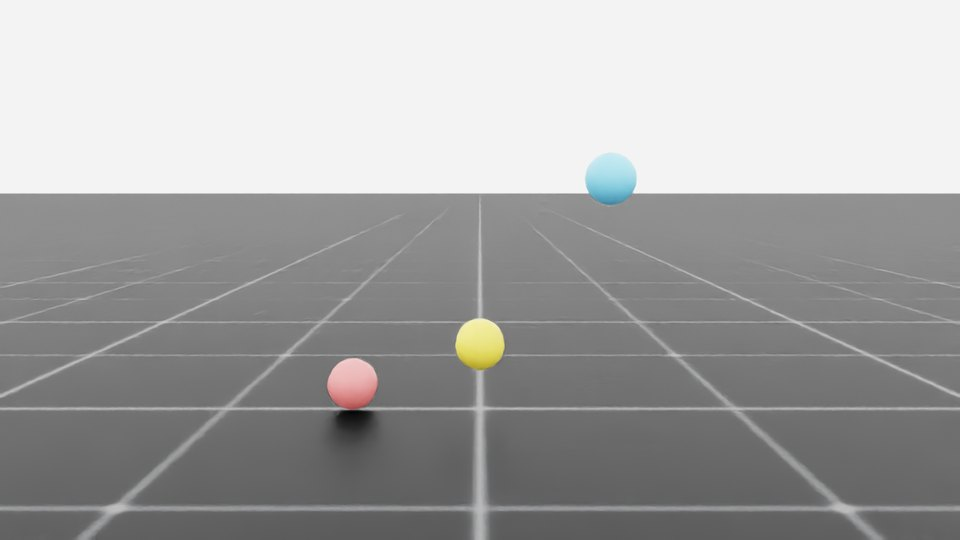
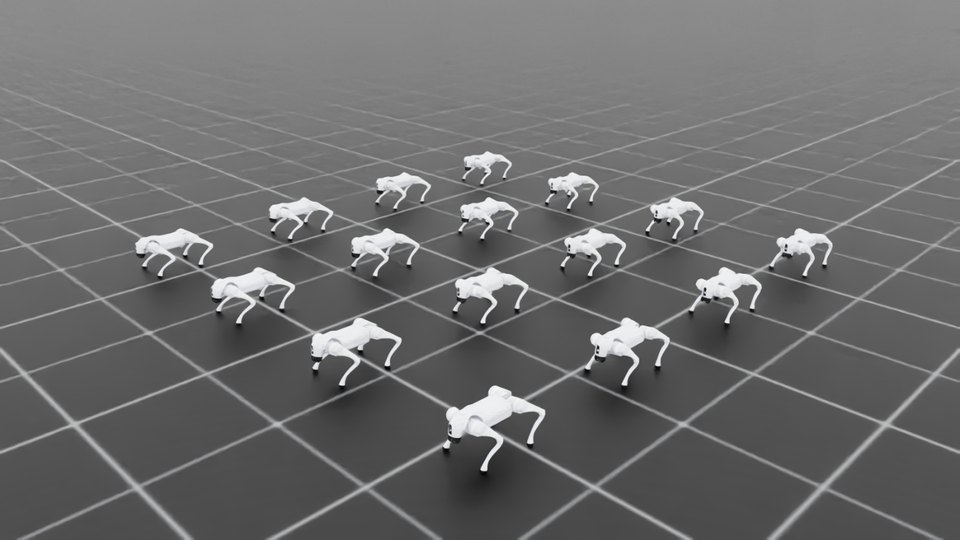
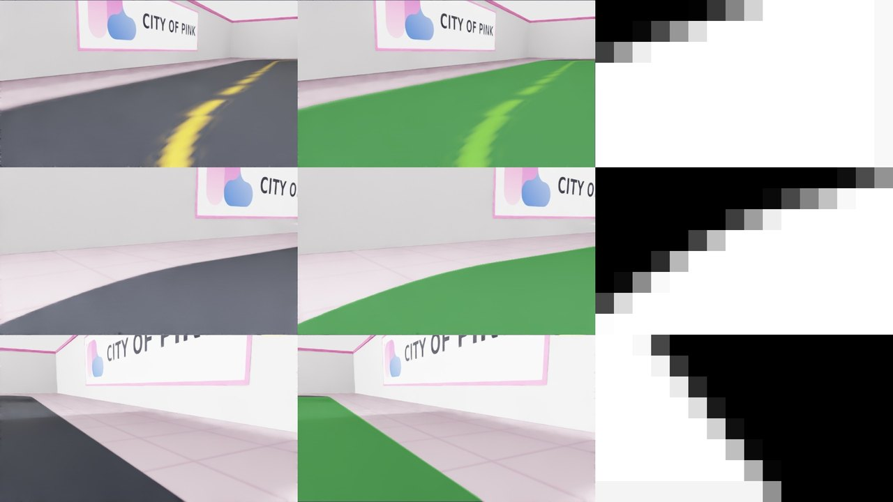

강화학습 단기 과정
NVIDIA Isaac Sim · Isaac Lab 으로 2일
역진자 · Pinky Pro · Unitree Go2 · Unitree G1
pinklab.art
보상만 정해 주면, 로봇이 스스로 익히는 강화학습
같은 틀을 점점 어려운 로봇에
- 환경의 다섯 부분 + PPO 를 네 가지 로봇에 적용
- 환경의 다섯 부분 = 행동 · 관측 · 이벤트 · 보상 · 종료
- 설치부터 학습 · 평가까지, 터미널 명령 그대로
- 학습 시간은 20초에서 40분까지 (RTX 5060 Ti 실측)
- 기다리지 않도록 미리 학습한 정책 포함
- 결과는 숫자로 확인: 넘어진 횟수 · 속도 오차 · 관절 오차
01
환경 설정과 물리엔진
1 ~ 3 페이지
- 폴더 하나에 설치: Isaac Sim · Isaac Lab
- USD 와 PhysX
- GPU 에서 로봇 4096 대를 동시에

공 낙하 실험 · 반발 계수와 시간 간격 비교

병렬 물리 · 같은 로봇을 GPU 에서 한꺼번에
02
역진자: 첫 강화학습
4 · 5 페이지
- PinkLAB 로터리 역진자 키트
- 환경의 다섯 부분: 행동 · 관측 · 이벤트 · 보상 · 종료
- PPO 학습 약 20초
- 보상과 관측을 바꿔 보는 실험
키트 1대 · 학습한 정책이 진자를 세움
16대 동시에 · 기울어진 진자를 바로 세우기
03
역진자: 학습 과정
5 페이지
- 키트 4096 개가 동시에 연습
- 학습 전에는 곧바로 쓰러짐
- 40 iteration 쯤 세우는 법을 찾음
- 150 iteration 에 약 20초
학습 전 · iteration 0
학습 중 · iteration 20
학습 후 · iteration 149
04
Pinky Pro: YOLO 도로 인식
6 페이지
- 작은 도시 핑크시티
- 카메라 영상과 정답을 자동으로 모으기
- YOLO 세그먼테이션 학습 약 70초
- 도로 마스크를 8 × 16 칸의 도로 시야로
핑크시티 · 순환 도로를 도는 Pinky Pro (2배속)

YOLO 확인 · 카메라 | 도로 마스크 | 도로 시야 8 × 16
05
Pinky Pro: 강화학습으로 길 찾기
7 페이지
- 도로 시야만 보고 바퀴 속도를 결정
- 학습 전에는 곧 도로를 벗어남
- 50 iteration 이면 도로 안에서 달림
- 300 iteration 2.9분이면 오른쪽 차로 유지
학습 전 · iteration 0
학습 중 · iteration 50
학습 후 · iteration 299
06
Pinky Pro: 카메라 + YOLO 로 주행
7 페이지
- 학습은 카메라 없이 1024 대로
- 평가는 로봇 카메라 + YOLO 로
- 정책에게는 같은 모양의 관측
- 16대 30초: 도로 이탈 없음
카메라 + YOLO · 도시 · 로봇 카메라와 도로 마스크 · 도로 시야 (2배속)
16대 주행 · 도시마다 한 대씩 순환 도로를 돎 (1.5배속)
07
Unitree Go2: 4족 보행
8 ~ 10 페이지
- USD 에서 서 있는 로봇까지
- 속도 명령을 따라 걷는 환경
- 4096 대로 4.5분 학습
- 명령한 속도와 실제 속도 비교
앞으로 걷기 · 1.0 m/s 속도 명령
16대 · 저마다 다른 속도 명령을 따라감
08
Unitree G1: 모션 모방
11 · 12 페이지
- 사람의 동작을 본보기로
- 앞으로 걷기
- 걷기 정책에게 쿵푸를 시키면?
- 이소룡 쿵푸 학습과 추론
앞으로 걷기 · 걷기를 학습한 정책
걷기 정책에게 쿵푸를 · 배운 적 없는 동작
이소룡 쿵푸 · 쿵푸를 학습한 정책
2일 일정
예시
1일차
설치 · 물리엔진
역진자
Pinky Pro 도로 인식 · 주행
Go2 USD
2일차
Go2 걷기 환경 · 학습
G1 걷기 · 쿵푸
오래 걸리는 학습은 걸어 두고, 미리 학습한 정책(checkpoints/)으로 바로 평가
준비물
- Ubuntu 24.04
- NVIDIA RTX GPU (VRAM 8 GB 이상 권장)
- NVIDIA Isaac Sim · Isaac Lab
- 모든 것을 폴더 하나(~/rl_shortcut)에 설치